คู่มือใช้งานเครื่องมือ · ระดับ Free
วิเคราะห์ Cooling Degree Days
Thailand CDD Analyzer
FREE
สำหรับช่างเทคนิคและผู้รับผิดชอบด้านพลังงาน — อ่านแล้วทำตามได้เอง
ใช้เวลาฝึกประมาณ 60 นาที
เคสตัวอย่าง: อาคาร A กรุงเทพฯ สร้างสมการพลังงานจากค่าไฟ 24 เดือน (ตัวเลขแต่งขึ้น)
อ.หนึ่ง กลับทวี / Aj. Nueng Klubtavee
tripleeenergytools.com
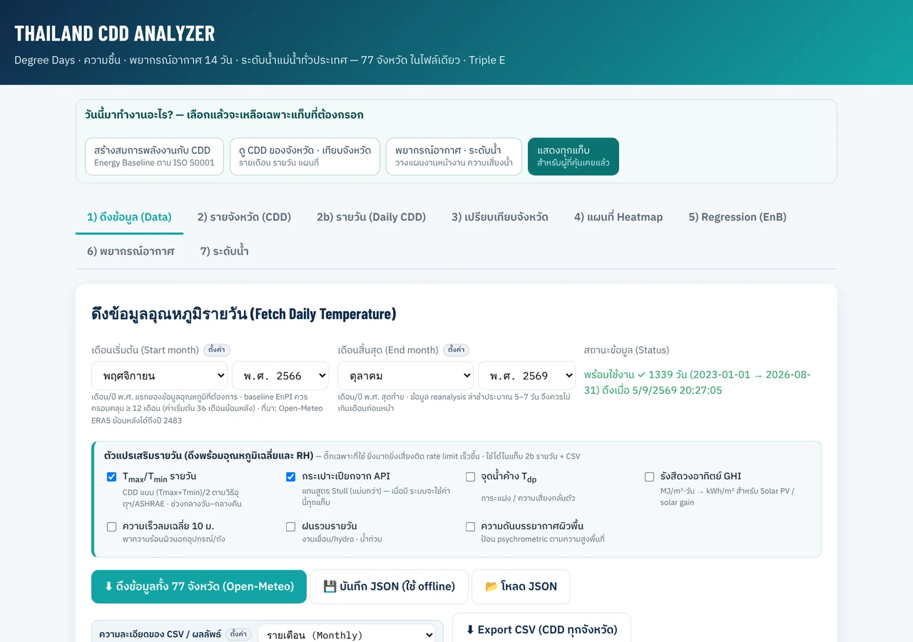
หน้าจอเครื่องมือ — เปิดได้จากเมนู Free ของเว็บไซต์
รุ่นเครื่องมือ: Free commit b68a0d7 · จับภาพ 25 พ.ย. 2569 · คู่มือ Rev03
เครื่องมือนี้ตอบคำถามอะไร
คู่มือใช้งาน · วิเคราะห์ Cooling Degree Days 77 จังหวัด (Thailand CDD Analyzer) · ระดับ Free
2 / 29
| คำถามหน้างาน | ใช้แท็บไหน | เคสอาคาร A ได้ |
|---|---|---|
| จังหวัดนี้ร้อนแค่ไหนในแต่ละเดือน แต่ละปี | 2) รายจังหวัด | กรุงเทพฯ 12 เดือนล่าสุด 1,702 °C·day |
| ช่วงไม่กี่เดือนที่ผ่านมาร้อนผิดปกติไหม | 2b) รายวัน | 90 วัน 434.7 °C·day |
| เทียบหลายจังหวัดที่มีสาขา/โรงงาน | 3) เปรียบเทียบ | กราฟรายเดือนหลายเส้น |
| ภาพรวมทั้งประเทศ | 4) แผนที่ | สูงสุด สิงห์บุรี 1,812 |
| สร้างสมการพลังงาน (EnB) ค่าไฟ vs CDD | 5) Regression | R² 0.923 · CV(RMSE) 3.1% |
| พยากรณ์อากาศ · ระดับน้ำ (ต้องออนไลน์) | 6) และ 7) | แนะนำสั้น ๆ ท้ายคู่มือ |
💡 เคล็ดลับ
ข้อมูลอุณหภูมิต้องดึงหรือโหลดที่แท็บ 1 ก่อน — แท็บ 2–5 จึงคำนวณได้
แผนที่หน้าจอ
คู่มือใช้งาน · วิเคราะห์ Cooling Degree Days 77 จังหวัด (Thailand CDD Analyzer) · ระดับ Free
3 / 29
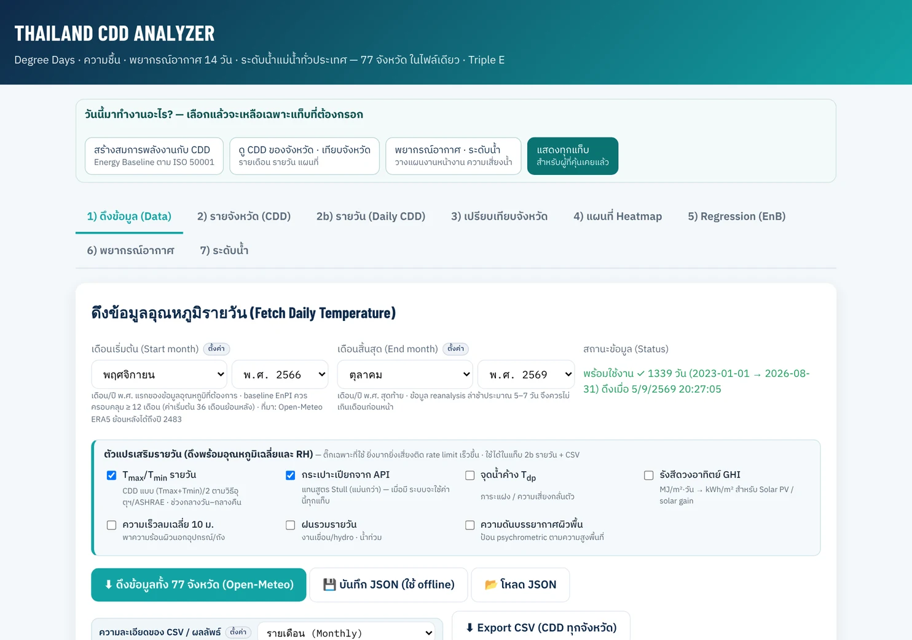
1
2
3
4
5
6
1
วันนี้มาทำงานอะไร? — เลือกงานแล้วเหลือเฉพาะแท็บที่ต้องใช้
2
แท็บ 1–7 เรียงตามลำดับงาน
3
ดึงข้อมูล 77 จังหวัดจาก Open-Meteo (ต้องออนไลน์)
4
บันทึก JSON — เก็บข้อมูลไว้ใช้ offline
5
โหลด JSON — เปิดข้อมูลที่เคยบันทึก
6
สถานะข้อมูล — ต้องขึ้น "พร้อมใช้งาน ✓"
💡 เคล็ดลับ
ดึงข้อมูลออนไลน์ครั้งเดียว แล้วบันทึก JSON — ครั้งต่อไปโหลดไฟล์ได้ทันทีแม้ไม่มีอินเทอร์เน็ต
เปิดบนมือถือ และสลับภาษา
คู่มือใช้งาน · วิเคราะห์ Cooling Degree Days 77 จังหวัด (Thailand CDD Analyzer) · ระดับ Free
4 / 29
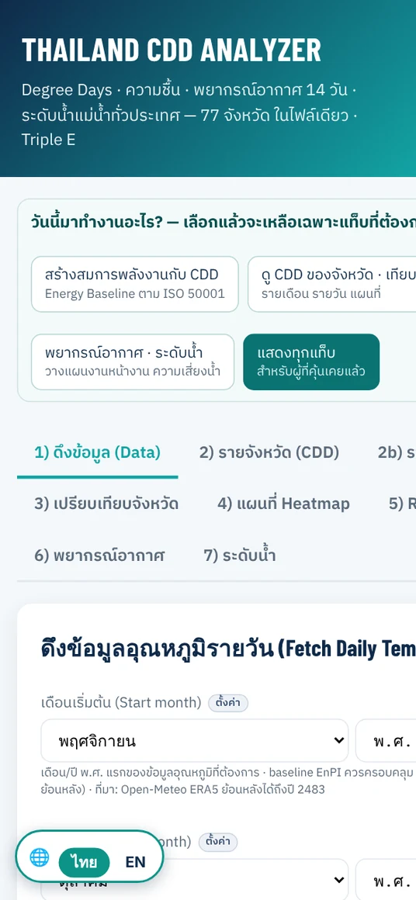
ใช้บนมือถือได้ — การ์ดเรียงลงมาเป็นแถวเดียว หน้าไม่กว้างเกินจอ · กราฟและตารางที่กว้างเลื่อนซ้ายขวาภายในกรอบของตัวเอง
ปุ่ม 🌐 ไทย | EN ลอยอยู่ด้านข้าง กดสลับภาษาได้ ข้อมูลที่โหลดไว้ไม่หาย
ป้าย ตั้งค่า ข้างชื่อช่อง = ค่าที่ผู้ใช้เลือกเอง เช่น จังหวัด base temperature
ใต้ทุกช่องมีคำอธิบายสีเทาบอกความหมายและค่าที่ใช้บ่อย
💡 เคล็ดลับ
งานสร้างสมการพลังงานแนะนำให้ทำบนคอมพิวเตอร์ เพราะต้องวางค่าไฟจาก Excel
คำศัพท์ 7 คำที่ต้องรู้ก่อนเริ่ม
คู่มือใช้งาน · วิเคราะห์ Cooling Degree Days 77 จังหวัด (Thailand CDD Analyzer) · ระดับ Free
5 / 29
| คำ | ความหมายแบบสั้น | จำง่าย ๆ |
|---|---|---|
| CDD (°C·day) | ผลรวมของ (อุณหภูมิเฉลี่ยรายวัน − base) เฉพาะวันที่ร้อนกว่า base | ตัวเลข "ความร้อนสะสม" ของเดือน |
| Base temperature | อุณหภูมิที่อาคารเริ่มต้องใช้แอร์ | อาคารปรับอากาศทั่วไป 24 °C |
| กระเปาะแห้ง / เปียก | อุณหภูมิอากาศปกติ / อุณหภูมิที่รวมผลความชื้น | แอร์ใช้แห้ง · หอผึ่งน้ำใช้เปียก |
| EnB (Energy Baseline) | สมการพลังงานอ้างอิง ใช้เทียบผลประหยัดภายหลัง | E = a + b·CDD |
| a (baseload) | พลังงานที่ใช้แม้อากาศไม่ร้อน — แสงสว่าง ลิฟต์ อุปกรณ์ | จุดตัดแกน |
| R² | สมการอธิบายการเปลี่ยนแปลงของพลังงานได้กี่ส่วน (0–1) | ใกล้ 1 ยิ่งดี |
| CV(RMSE) | ความคลาดเคลื่อนของสมการเทียบค่าเฉลี่ย (%) | สมการฐาน ≤ 20 % ตาม ASHRAE G14 (ช่วงรายงานผล < 12 เดือน) |
💡 เคล็ดลับ
วิธีคิด CDD ของเครื่องมือ: ใช้อุณหภูมิเฉลี่ยรายวัน (daily-mean) — ตัวเลขอาจต่างจากเว็บที่คิดจากข้อมูลรายชั่วโมงเล็กน้อย
เตรียมข้อมูลก่อนเริ่ม
คู่มือใช้งาน · วิเคราะห์ Cooling Degree Days 77 จังหวัด (Thailand CDD Analyzer) · ระดับ Free
6 / 29
| ข้อมูล | รายละเอียด | แหล่งข้อมูล | อาคาร A |
|---|---|---|---|
| ที่ตั้ง | จังหวัดของอาคาร/โรงงาน | ที่อยู่ตามทะเบียน | กรุงเทพฯ |
| พลังงานรายเดือน | kWh ของมิเตอร์ที่ต้องการทำสมการ ครบทุกเดือน | บิลค่าไฟ / มิเตอร์ย่อย | 24 เดือน ก.ย. 67 – ส.ค. 69 |
| ผลผลิต (ถ้ามี) | ตันหรือหน่วยผลผลิตรายเดือน — โรงงาน | รายงานการผลิต | ไม่มี (อาคาร) |
| ข้อมูลอุณหภูมิ | ดึงออนไลน์ หรือไฟล์ JSON ที่บันทึกไว้ | แท็บ 1 | ไฟล์ JSON 1 ม.ค. 66 – 31 ส.ค. 69 |
| รอบบิล | ตรวจว่ารอบบิลตรงเดือนปฏิทินหรือไม่ | บิลค่าไฟ | ตรงเดือนปฏิทิน |
⚠️ ระวัง
ค่าพลังงานของอาคาร A และโรงงาน B ในคู่มือนี้เป็นตัวเลขแต่งขึ้นเพื่อการสอน — งานจริงต้องใช้ค่าจากมิเตอร์หรือบิลของอาคารนั้น
ขั้นที่ 1
แท็บ 1: ดึงข้อมูล หรือโหลดไฟล์ JSON
คู่มือใช้งาน · วิเคราะห์ Cooling Degree Days 77 จังหวัด (Thailand CDD Analyzer) · ระดับ Free
7 / 29
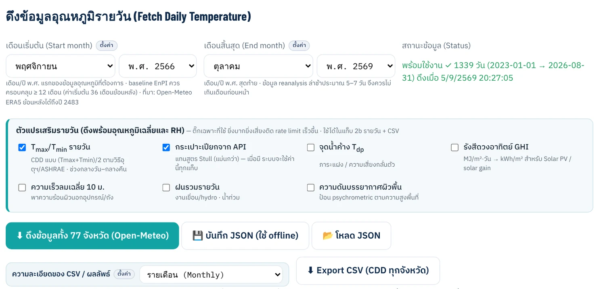
1
2
3
4
5
6
7
8
1
เดือนเริ่มต้น — ย้อนหลังอย่างน้อย 12 เดือน
2
เดือนสิ้นสุด — ข้อมูลล่าช้าประมาณ 5–7 วัน
3
สถานะ: พร้อมใช้งาน ✓ 1339 วัน (2023-01-01 → 2026-08-31)
4
ตัวแปรเสริม — กระเปาะเปียก จุดน้ำค้าง แดด ลม ฝน
5
ดึงข้อมูลทั้ง 77 จังหวัด (ต้องออนไลน์)
6
บันทึก JSON
7
โหลด JSON
8
ความละเอียดของ CSV — รายเดือน รายสัปดาห์ รายวัน
คู่มือนี้ใช้ไฟล์ JSON ที่บันทึกจากเครื่องมือ (ข้อมูล ERA5 ผ่าน Open-Meteo) — กด โหลด JSON แล้วเลือกไฟล์
ดึงออนไลน์ถ้าติดข้อจำกัดจำนวนครั้งของ API เครื่องมือจะรอแล้วดึงต่อเอง — ไม่ต้องกดซ้ำ
ขั้นที่ 2
แท็บ 2: CDD รายเดือนของจังหวัด
คู่มือใช้งาน · วิเคราะห์ Cooling Degree Days 77 จังหวัด (Thailand CDD Analyzer) · ระดับ Free
8 / 29
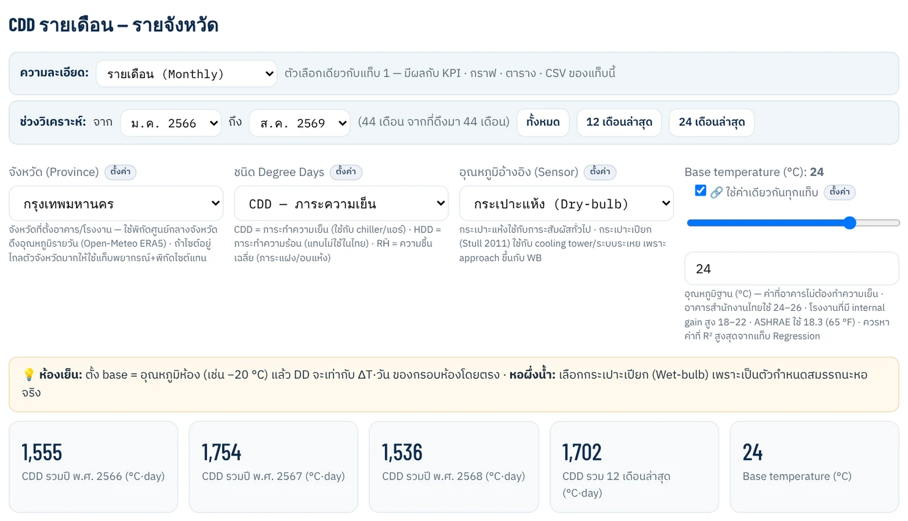
1
2
3
4
5
6
1
ช่วงวิเคราะห์ — ทั้งหมด · 12 · 24 เดือนล่าสุด
2
จังหวัด — กรุงเทพมหานคร
3
ชนิด Degree Days — CDD (ความเย็น) · HDD · %RH
4
อุณหภูมิอ้างอิง — กระเปาะแห้ง หรือเปียก
5
Base temperature — เลื่อนหรือพิมพ์ได้ −25 ถึง +35 °C
6
CDD 12 เดือนล่าสุด 1,702 °C·day
CDD รวมรายปี: พ.ศ. 2566 1,555 · 2567 1,754 · 2568 1,536 °C·day (base 24 °C)
ห้องเย็นใช้ base = อุณหภูมิห้อง (เช่น −20 °C) — กล่องสีเหลืองใต้ช่องกรอกอธิบายไว้
กราฟ CDD รายเดือน เทียบแต่ละปี
คู่มือใช้งาน · วิเคราะห์ Cooling Degree Days 77 จังหวัด (Thailand CDD Analyzer) · ระดับ Free
9 / 29
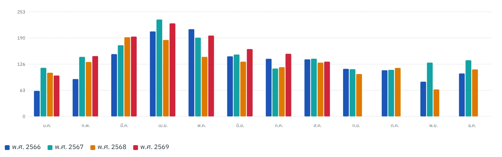
แท่งแต่ละสีคือแต่ละปี — เห็นทันทีว่าเดือนไหนร้อนกว่าปีก่อน
กรุงเทพฯ ร้อนสุดช่วง มี.ค.–พ.ค. — ช่วงที่แอร์ทำงานหนักที่สุด
ปีที่ร้อนกว่าจะใช้ไฟแอร์มากกว่า แม้ไม่ได้ทำอะไรผิด — จึงต้องปรับผลประหยัดด้วย CDD
💡 เคล็ดลับ
ปุ่ม Export CSV ใต้ตารางส่งตัวเลขไป Excel ได้
ตาราง CDD รายเดือน และการทวนอิสระ
คู่มือใช้งาน · วิเคราะห์ Cooling Degree Days 77 จังหวัด (Thailand CDD Analyzer) · ระดับ Free
10 / 29
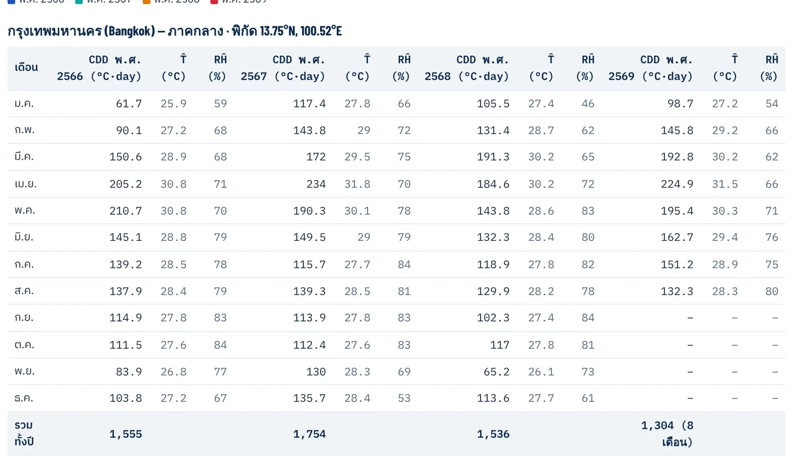
1
1
แถว พ.ย. — พ.ศ. 2568 เย็นผิดปกติ (65.2 °C·day)
แต่ละปีมี 3 คอลัมน์: CDD · อุณหภูมิเฉลี่ย · ความชื้นสัมพัทธ์
ทวนอิสระด้วย Python จากไฟล์เดียวกัน: Σ max(0, T เฉลี่ยรายวัน − 24) → พ.ศ. 2566 1,554.6 · 2567 1,754.0 · 2568 1,535.8 · 12 เดือนล่าสุด 1,701.9 — ตรงกับเครื่องมือ
ลองเปลี่ยนค่า (What-if): base และชนิดอุณหภูมิ เปลี่ยน CDD มาก
คู่มือใช้งาน · วิเคราะห์ Cooling Degree Days 77 จังหวัด (Thailand CDD Analyzer) · ระดับ Free
11 / 29
| กรณี (กรุงเทพฯ) | พ.ศ. 2566 | พ.ศ. 2567 | พ.ศ. 2568 | 12 เดือนล่าสุด |
|---|---|---|---|---|
| base 24 °C · กระเปาะแห้ง | 1,555 | 1,754 | 1,536 | 1,702 |
| base 26 °C · กระเปาะแห้ง | 862 | 1,023 | 828 | 996 |
| base 24 °C · กระเปาะเปียก | 442 | 542 | 383 | 413 |
ทำเอง: เลื่อน base หรือเปลี่ยนชนิดอุณหภูมิในแท็บ 2 → อ่านการ์ด → แก้กลับ
base ขึ้น 2 °C CDD ลดเกือบครึ่ง — ต้องระบุ base ทุกครั้งที่รายงาน CDD
ตัวเลขต่างกันแบบนี้จึงห้ามนำ CDD ต่าง base มาเทียบกัน
💡 เคล็ดลับ
ทวนอิสระ: base 26 °C พ.ศ. 2568 = 828.4 °C·day ตรงกับเครื่องมือ
ขั้นที่ 3
แท็บ 2b: CDD รายวัน
คู่มือใช้งาน · วิเคราะห์ Cooling Degree Days 77 จังหวัด (Thailand CDD Analyzer) · ระดับ Free
12 / 29
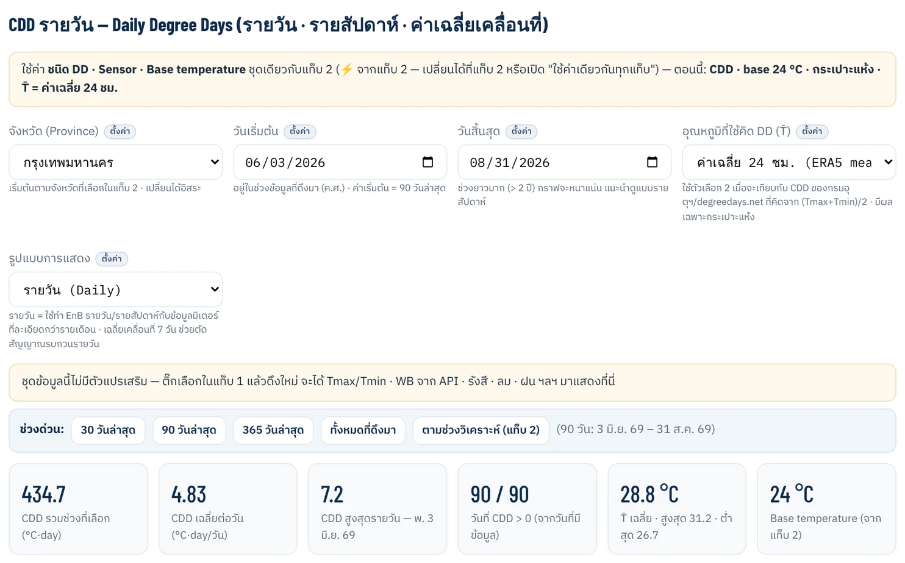
1
2
3
4
5
1
จังหวัด
2
วันเริ่มต้น
3
วันสิ้นสุด
4
อุณหภูมิที่ใช้ — เฉลี่ย 24 ชม. หรือ (Tmax+Tmin)/2
5
CDD รวมช่วง 90 วัน 434.7
เฉลี่ย 4.83 °C·day ต่อวัน · สูงสุด 7.2 °C·day · ปุ่มลัด 30 · 90 · 365 วัน
ใช้เมื่อรอบบิลไม่ตรงเดือนปฏิทิน — เลือกวันให้ตรงรอบบิลแล้วรวม CDD เอง
ทวนอิสระ: 3 มิ.ย. – 31 ส.ค. 2569 = 434.7 °C·day ตรงกับเครื่องมือ
กราฟ CDD รายวัน และอุณหภูมิ
คู่มือใช้งาน · วิเคราะห์ Cooling Degree Days 77 จังหวัด (Thailand CDD Analyzer) · ระดับ Free
13 / 29
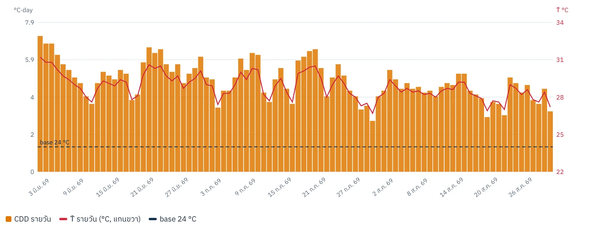
แท่งส้ม = CDD รายวัน · เส้นแดง = อุณหภูมิเฉลี่ย (แกนขวา) · เส้นประ = base
วันที่อุณหภูมิต่ำกว่า base CDD = 0 — แอร์แทบไม่ต้องทำงาน
ใช้กราฟนี้อธิบายว่าทำไมค่าไฟเดือนนี้สูงหรือต่ำผิดปกติ
ขั้นที่ 4
แท็บ 3: เปรียบเทียบหลายจังหวัด
คู่มือใช้งาน · วิเคราะห์ Cooling Degree Days 77 จังหวัด (Thailand CDD Analyzer) · ระดับ Free
14 / 29
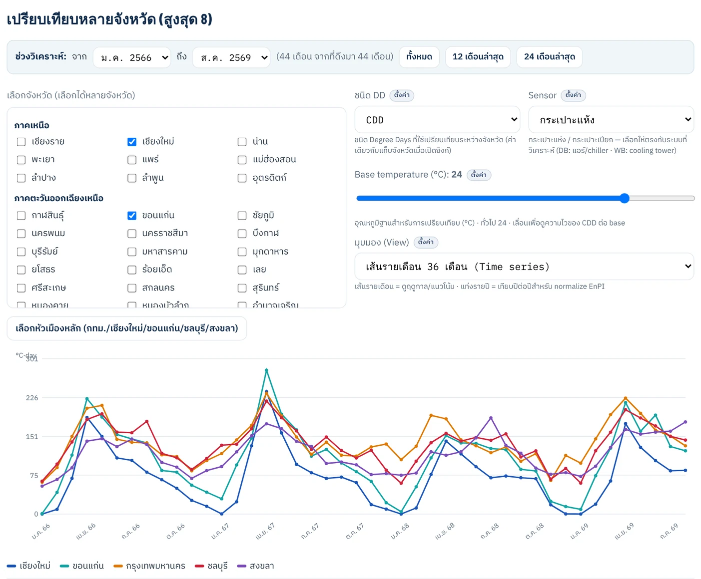
1
2
3
4
1
ติ๊กจังหวัด ที่ต้องการ (สูงสุด 8)
2
เลือกหัวเมืองหลัก — ติ๊กให้ 5 จังหวัดในครั้งเดียว
3
Base temperature
4
มุมมอง — เส้นรายเดือน · แท่งรายปี ฯลฯ
ใช้เทียบสาขาหรือโรงงานหลายแห่ง — ภาระแอร์ของแต่ละที่ต่างกันตามสภาพอากาศ
ภาคเหนือมีเดือนที่ CDD ต่ำมากช่วงหนาว ส่วนภาคกลางและภาคใต้ร้อนสม่ำเสมอกว่า
ตารางเปรียบเทียบจังหวัด
คู่มือใช้งาน · วิเคราะห์ Cooling Degree Days 77 จังหวัด (Thailand CDD Analyzer) · ระดับ Free
15 / 29
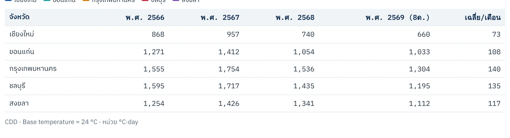
ตารางสรุปตัวเลขของทุกจังหวัดที่เลือกในช่วงวิเคราะห์เดียวกัน
ใช้ normalize ตัวชี้วัดพลังงาน (EnPI) ของสาขาที่อยู่คนละจังหวัด ก่อนนำมาเทียบกัน
💡 เคล็ดลับ
กด "พิมพ์รายงาน" ท้ายแท็บเพื่อพิมพ์กราฟและตารางแนบรายงาน
แท็บ 4: แผนที่ Heatmap ทั้งประเทศ
คู่มือใช้งาน · วิเคราะห์ Cooling Degree Days 77 จังหวัด (Thailand CDD Analyzer) · ระดับ Free
16 / 29
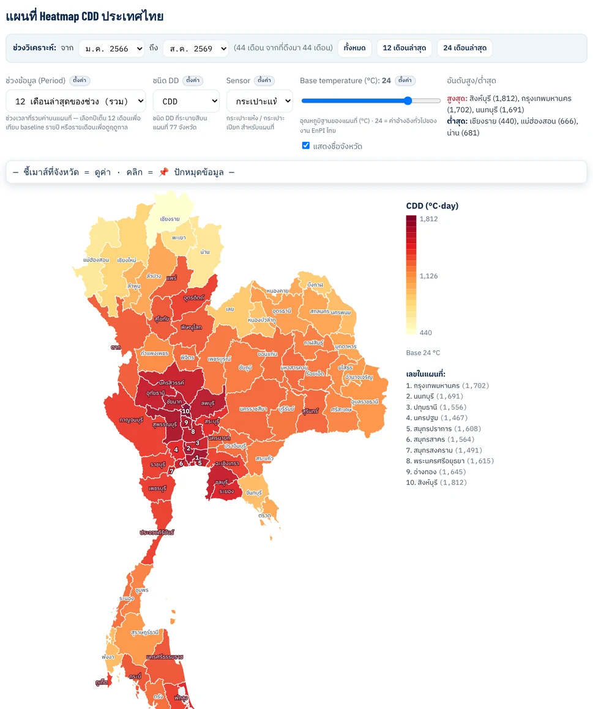
1
2
3
1
ช่วงข้อมูล — 12 เดือนล่าสุด หรือเดือน/ปีที่เลือก
2
Base temperature
3
สูงสุด–ต่ำสุดของช่วงที่เลือก
สีเข้ม = CDD สูง · ชี้เมาส์ที่จังหวัดเพื่อดูค่า · คลิกเพื่อปักหมุด
ภาคกลางตอนบนและกรุงเทพฯ ปริมณฑล CDD สูงสุด · ภาคเหนือตอนบนต่ำสุด
ตารางอันดับ 77 จังหวัด
คู่มือใช้งาน · วิเคราะห์ Cooling Degree Days 77 จังหวัด (Thailand CDD Analyzer) · ระดับ Free
17 / 29
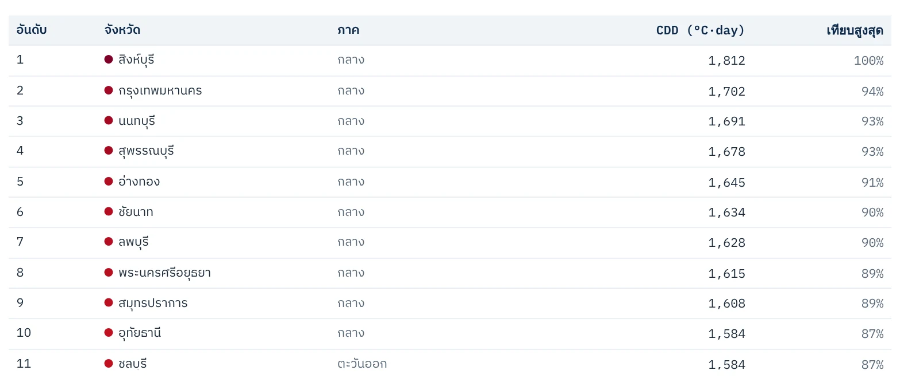
อันดับ 1 สิงห์บุรี 1,812 · อันดับ 2 กรุงเทพมหานคร 1,702 °C·day (12 เดือนล่าสุด base 24 °C)
คอลัมน์ขวาเทียบเป็นร้อยละของจังหวัดที่สูงสุด
ค่ากรุงเทพฯ ในตารางนี้ตรงกับการ์ด "12 เดือนล่าสุด" ในแท็บ 2
ขั้นที่ 5
แท็บ 5 Regression: ตั้งค่าแบบจำลอง
คู่มือใช้งาน · วิเคราะห์ Cooling Degree Days 77 จังหวัด (Thailand CDD Analyzer) · ระดับ Free
18 / 29
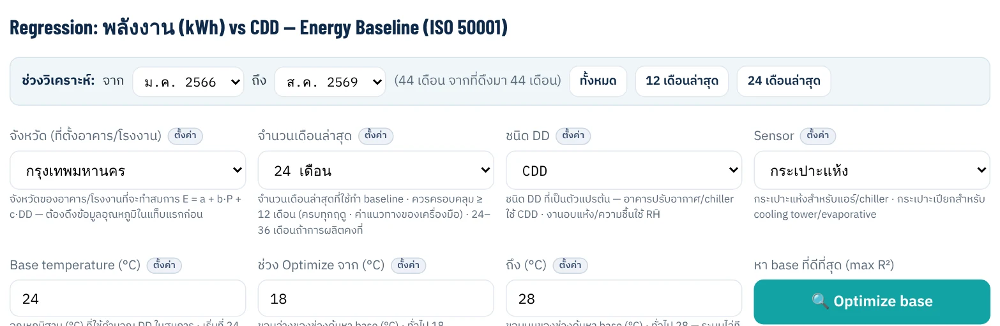
1
2
3
4
5
6
7
1
ช่วงวิเคราะห์
2
จังหวัดที่ตั้งอาคาร
3
จำนวนเดือนล่าสุด — 12 · 24 · 36
4
ชนิด DD — CDD สำหรับอาคารปรับอากาศ
5
Sensor — กระเปาะแห้งสำหรับแอร์/chiller
6
Base temperature ของสมการ
7
Optimize base — ไล่หา base ที่ R² สูงสุดในช่วงที่กำหนด
เกณฑ์จำนวนเดือน ≥ 12 เดือนเป็นค่าแนวทางของเครื่องมือ — ครอบคลุมทุกฤดูอย่างน้อย 1 รอบ
กรอกพลังงานรายเดือน (อาคาร A — ตัวเลขแต่งขึ้น)
คู่มือใช้งาน · วิเคราะห์ Cooling Degree Days 77 จังหวัด (Thailand CDD Analyzer) · ระดับ Free
19 / 29
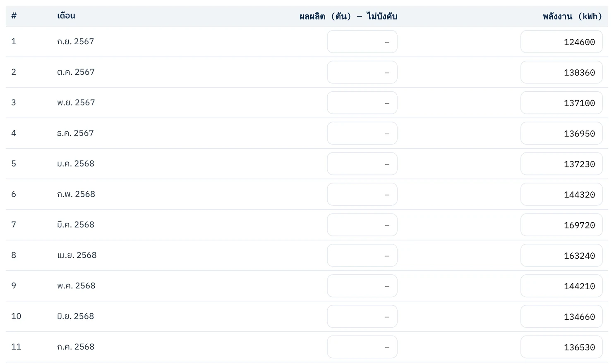
1
2
1
ผลผลิต (ไม่บังคับ) — กรอก ≥ 6 เดือนเครื่องมือสลับเป็นแบบจำลอง 2 ตัวแปรเอง
2
พลังงาน (kWh) ของแต่ละเดือน
วางจาก Excel ได้: คัดลอกทั้งคอลัมน์แล้ววางในช่องแรก — ระบบกระจายลงทุกแถว
เรียงเดือนจากเก่าไปใหม่ให้ตรงกับคอลัมน์เดือน · แล้วกด คำนวณ Regression
⚠️ ระวัง
เดือนที่มีเหตุผิดปกติ (ปิดซ่อมใหญ่ ขยายพื้นที่) ต้องแยกออกหรือทำบันทึกปรับปรุง — ไม่ใช่ปล่อยให้สมการกลืนไป
อ่านผลสมการ Baseline
คู่มือใช้งาน · วิเคราะห์ Cooling Degree Days 77 จังหวัด (Thailand CDD Analyzer) · ระดับ Free
20 / 29
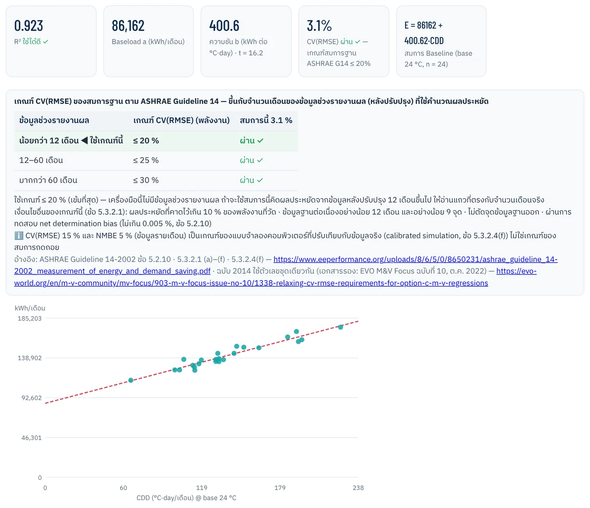
1
2
3
4
5
6
1
R² 0.923 — ใช้ได้ดี
2
Baseload a 86,162 kWh/เดือน
3
ความชัน b 400.6 kWh ต่อ °C·day · t = 16.2
4
CV(RMSE) 3.1% — เกณฑ์สมการฐาน ASHRAE G14 ≤ 20 % (เข้มสุด)
5
สมการ: E = 86162 + 400.62·CDD
6
ตารางเกณฑ์ 3 ระดับ: ช่วงรายงานผล < 12 เดือน ≤ 20 % · 12–60 เดือน ≤ 25 % · > 60 เดือน ≤ 30 %
ทวนอิสระ (Python numpy, OLS) ด้วย CDD ที่คำนวณเองจากไฟล์: a 86,162 · b 400.6 · R² 0.923 · CV(RMSE) 3.1 % (หารด้วย n − p) — ตรงกับเครื่องมือ
กราฟ: จุด = ค่าจริง · เส้นประ = สมการ — จุดควรกระจายรอบเส้นไม่มีรูปแบบ
ตารางเทียบค่าจริงกับแบบจำลอง
คู่มือใช้งาน · วิเคราะห์ Cooling Degree Days 77 จังหวัด (Thailand CDD Analyzer) · ระดับ Free
21 / 29
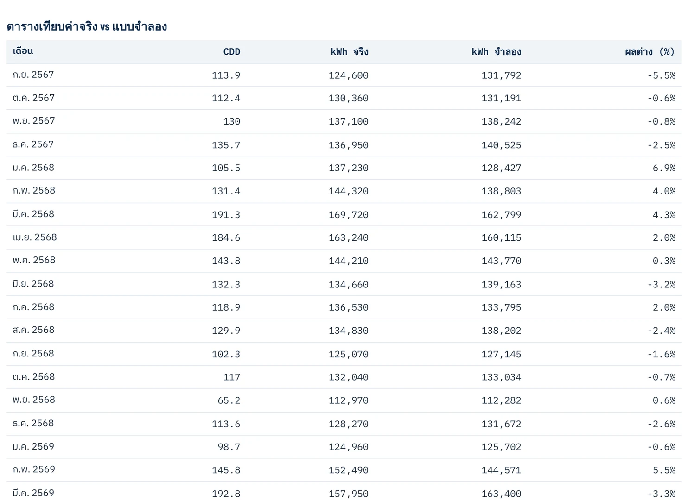
1
1
ม.ค. 2568: ต่างจากสมการ 6.9% — มากที่สุดในชุดนี้
เดือนแรก ก.ย. 2567: CDD 113.9 · จริง 124,600 · จำลอง 131,792 kWh (-5.5%)
เดือนที่ต่างมากผิดสังเกต ให้ตรวจบันทึกการใช้งานของเดือนนั้น — วันหยุดยาว ซ่อมบำรุง หรือมิเตอร์ผิด
สมการนี้ใช้คำนวณ "พลังงานที่ควรใช้" ของเดือนหลังทำมาตรการ แล้วเทียบกับค่าจริงเป็นผลประหยัด
เกณฑ์ตัดสินแบบจำลอง — อ่านกล่องหมายเหตุ
คู่มือใช้งาน · วิเคราะห์ Cooling Degree Days 77 จังหวัด (Thailand CDD Analyzer) · ระดับ Free
22 / 29
1
1
เกณฑ์ที่เครื่องมือใช้: R² ≥ 0.75 · |t| ≥ 2 · CV(RMSE) สมการฐาน ≤ 20 % ตาม ASHRAE Guideline 14 ข้อ 5.3.2.1(e) (25 % เมื่อช่วงรายงานผล 12–60 เดือน · 30 % เมื่อเกิน 60 เดือน)
R² ≥ 0.75 และ |t| ≥ 2 เป็นเกณฑ์ทั่วไปที่เครื่องมือใช้คัดกรอง — เกณฑ์ CV(RMSE) อ้างอิง ASHRAE Guideline 14 · 15 % เป็นเกณฑ์ของ calibrated simulation ไม่ใช่สมการถดถอย
Optimize base ใช้กับอาคารปรับอากาศ — ห้องเย็นให้ตั้ง base = setpoint ตายตัว
หอผึ่งน้ำใช้ DD กระเปาะเปียกร่วมกับผลผลิตเป็น 2 ตัวแปร
ลองเปลี่ยนค่า (What-if): จำนวนเดือน และ base ที่ดีที่สุด
คู่มือใช้งาน · วิเคราะห์ Cooling Degree Days 77 จังหวัด (Thailand CDD Analyzer) · ระดับ Free
23 / 29
| กรณี (อาคาร A) | base (°C) | R² | a (kWh/เดือน) | b (kWh/°C·day) | CV(RMSE) |
|---|---|---|---|---|---|
| 24 เดือน base 24 °C | 24 | 0.923 | 86,162 | 400.6 | 3.1% |
| ใช้เพียง 12 เดือนล่าสุด | 24 | 0.961 | 87,862 | 384.6 | 2.7% |
| กด Optimize base (ช่วง 18–28 °C) | 26 | 0.930 | 108,423 | 420.9 | 3.0% |
ทำเอง: เปลี่ยนจำนวนเดือน หรือกด Optimize base → อ่านผล → ตั้งกลับ
Optimize ได้ base 26 °C R² ขึ้นเล็กน้อย แต่ a เปลี่ยนมาก — สมการต้องใช้คู่กับ base เดิมเสมอ
ข้อมูลน้อยเดือน R² อาจดูดีขึ้นแต่ครอบคลุมฤดูกาลน้อยลง — เลือกจำนวนเดือนตามหลักการ ไม่ใช่ตามค่า R²
บันทึก JSON แล้วเปิดใหม่: ผล Regression กลับมาเอง
คู่มือใช้งาน · วิเคราะห์ Cooling Degree Days 77 จังหวัด (Thailand CDD Analyzer) · ระดับ Free
24 / 29
1
2
1
R² 0.923 — ขึ้นทันทีหลังเปิดไฟล์ ไม่ต้องกดคำนวณ
2
สมการ E = 86162 + 400.62·CDD — เท่ากับก่อนบันทึก
บันทึก JSON หลังกดคำนวณ Regression → เปิดไฟล์นั้นใหม่: แท็บ 5 กลับมาเป็น กรุงเทพมหานคร · 24 เดือน · base 24 °C พร้อมผล a 86,162 · b 400.6 · CV(RMSE) 3.1% (เท่าเคสหลักทุกค่า)
ที่กลับมาด้วย: ช่วงวิเคราะห์ · ช่วงค้นหาของ Optimize base · ค่าตั้งแท็บพยากรณ์อากาศ (ตัวข้อมูลพยากรณ์ไม่ได้บันทึก ต้องดึงใหม่เมื่อออนไลน์)
เครื่องมือคำนวณใหม่จากข้อมูลและค่าตั้งในไฟล์ แล้วเทียบกับสมการที่บันทึกไว้ — ถ้าแก้ตารางหลังกดคำนวณแล้วจึงบันทึก จะขึ้นกล่องเตือนสีส้มเหนือผล และแสดงผลที่คำนวณใหม่
⚠️ ระวัง
ตัวอย่าง: แก้ kWh เดือนแรกแล้วบันทึกโดยไม่กดคำนวณ → เปิดไฟล์ขึ้น "⚠ สมการที่บันทึกในไฟล์ (E = 86162 + 400.62·CDD · R² = 0.923) ต่างจากผลที่คำนวณใหม่…" แล้วแสดง E = 87667 + 392.78·CDD · R² 0.929 — ให้ตรวจตารางก่อนใช้สมการ
แท็บ 6–7 และงานที่ต้องออนไลน์
คู่มือใช้งาน · วิเคราะห์ Cooling Degree Days 77 จังหวัด (Thailand CDD Analyzer) · ระดับ Free
25 / 29
| แท็บ / งาน | ใช้ทำอะไร | ต้องออนไลน์ |
|---|---|---|
| 6) พยากรณ์อากาศ | พยากรณ์ 14 วัน — วางแผนงานหน้างาน ความเสี่ยงฝน/ความร้อน | ต้อง |
| 7) ระดับน้ำ | ระดับน้ำจากสถานีวัดทั่วประเทศ — งานเขื่อน/น้ำท่วม | ต้อง |
| 1) ดึงข้อมูลอุณหภูมิ | ดึงครั้งแรก แล้วบันทึก JSON ไว้ใช้ภายหลัง | ครั้งแรกเท่านั้น |
| 2) – 5) วิเคราะห์ CDD และ Regression | คำนวณในเครื่องผู้ใช้ทั้งหมด ไม่ส่งค่าพลังงานออกภายนอก | ไม่ต้อง (เมื่อโหลด JSON แล้ว) |
💡 เคล็ดลับ
งานภาคสนามที่ไม่มีอินเทอร์เน็ต: เตรียมไฟล์ JSON ไว้ก่อนออกจากสำนักงาน
ข้อผิดพลาดที่พบบ่อย
คู่มือใช้งาน · วิเคราะห์ Cooling Degree Days 77 จังหวัด (Thailand CDD Analyzer) · ระดับ Free
26 / 29
✗ ไม่ระบุ base
✓ CDD ต้องมี base กำกับทุกครั้ง
✗ เทียบ CDD ต่าง base
✓ base ต่าง 2 °C ตัวเลขต่างเกือบเท่าตัว
✗ รอบบิลไม่ตรงเดือน
✓ ใช้แท็บ 2b รายวัน รวม CDD ให้ตรงรอบบิล
✗ เดือนผิดปกติปนในสมการ
✓ แยกเดือนปิดซ่อม/ขยายพื้นที่ หรือทำบันทึกปรับปรุง
✗ ข้อมูลน้อยกว่า 12 เดือน
✓ สมการไม่ครอบคลุมทุกฤดู
✗ เลือก base จาก R² อย่างเดียว
✓ ใช้ base ที่มีเหตุผลทางวิศวกรรม และใช้ base เดิมตลอด
✗ ห้องเย็นใช้ Optimize base
✓ ห้องเย็นตั้ง base = setpoint
✗ ลืมบันทึก JSON
✓ บันทึกหลังกดคำนวณ — เปิดใหม่ได้ทั้งข้อมูลและสมการ
แบบฝึกหัด: โรงงาน B จังหวัดขอนแก่น
คู่มือใช้งาน · วิเคราะห์ Cooling Degree Days 77 จังหวัด (Thailand CDD Analyzer) · ระดับ Free
27 / 29
| ข้อมูล | ค่า |
|---|---|
| ที่ตั้ง | ขอนแก่น |
| ข้อมูลอุณหภูมิ (ไฟล์ฝึก) | CDD_Thailand_data_2023-01-01_2026-08-31.json |
| พลังงาน 24 เดือน ก.ย. 67 – ส.ค. 69 (ไฟล์ฝึก) | โรงงานB_kWh.csv (ตัวเลขแต่งขึ้น) |
| เดือนแรก · เดือนสุดท้าย | 81,380 · 90,320 kWh |
| ชนิด DD · sensor · base | CDD · กระเปาะแห้ง · 24 °C |
คำถาม — กรอกแล้วตอบ
1
แท็บ 2: CDD ปี พ.ศ. 2567 ของขอนแก่น = ______ °C·day
2
แท็บ 5: R² = ______ · CV(RMSE) = ______ %
3
สมการ E = ______ + ______ · CDD
4
แบบจำลองผ่านเกณฑ์ของเครื่องมือหรือไม่?
💡 เคล็ดลับ
ไฟล์ฝึกอยู่ในโฟลเดอร์ ไฟล์ฝึก_CDD-Thailand · โหลด JSON → แท็บ 2 เลือกขอนแก่น → แท็บ 5 ขอนแก่น 24 เดือน → วางคอลัมน์ kWh → คำนวณ
เฉลยแบบฝึกหัด โรงงาน B
คู่มือใช้งาน · วิเคราะห์ Cooling Degree Days 77 จังหวัด (Thailand CDD Analyzer) · ระดับ Free
28 / 29
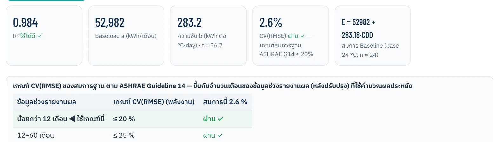
1) CDD ขอนแก่น พ.ศ. 2567 = 1,412 °C·day (กรุงเทพฯ 1,754)
2) R² 0.984 · CV(RMSE) 2.6%
3) E = 52982 + 283.18·CDD (t = 36.7)
4) ผ่าน — R² ≥ 0.75 · |t| ≥ 2 · CV(RMSE) ≤ 20 %
✓ ผ่าน
ได้ตัวเลขตรงกัน = ใช้เครื่องมือเป็นแล้ว · ทวนอิสระด้วย Python: CDD 2567 = 1,411.6 · b 283.2 · R² 0.984 · CV(RMSE) 2.6 %
สรุป 1 หน้า (พิมพ์ติดไว้ข้างคอมพิวเตอร์)
คู่มือใช้งาน · วิเคราะห์ Cooling Degree Days 77 จังหวัด (Thailand CDD Analyzer) · ระดับ Free
29 / 29
1
แท็บ 1
ดึงข้อมูล (ออนไลน์) หรือโหลด JSON → สถานะพร้อมใช้งาน
2
แท็บ 2
จังหวัด · CDD · กระเปาะแห้ง · base → CDD รายเดือน/รายปี
3
แท็บ 2b
CDD รายวัน — ใช้เมื่อรอบบิลไม่ตรงเดือน
4
แท็บ 3
เทียบหลายจังหวัด (สูงสุด 8)
5
แท็บ 4
แผนที่และอันดับ 77 จังหวัด
6
แท็บ 5: ตั้งค่า
จังหวัด · จำนวนเดือน · base
7
แท็บ 5: ข้อมูล
วาง kWh (และผลผลิต) → คำนวณ Regression
8
แท็บ 5: ตัดสิน
R² ≥ 0.75 · |t| ≥ 2 · CV(RMSE) ≤ 20 % → บันทึก JSON
อ่านผลแล้วตรวจ
☐
ระบุ base ทุกครั้ง
☐
ข้อมูล ≥ 12 เดือน
☐
ตรวจเดือนผิดปกติ
☐
ใช้สมการคู่กับ base เดิม
อ.หนึ่ง กลับทวี / Aj. Nueng Klubtavee
tripleeenergytools.com
tripleeenergytools.com